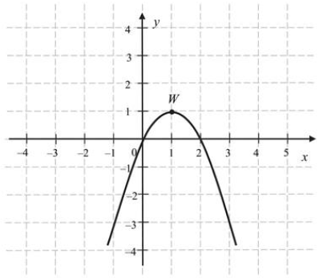
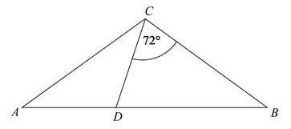
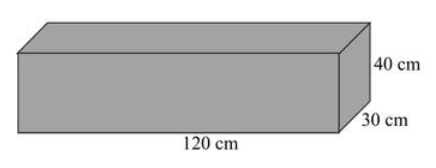
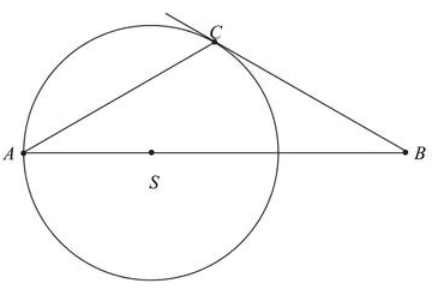

Matura 2019 sierpień
Na tej stronie znajdują się rozwiązania z matury
poprawkowej z 20 sierpnia 2019.
Liczba \(\log_\sqrt{7}7\) jest równa
A.\( 2 \)
B.\( 7 \)
C.\( \sqrt{7} \)
D.\( \frac{1}{2} \)
A
Kwadrat liczby \(8-3\sqrt{7}\) jest równy
A.\( 127+48\sqrt{7} \)
B.\( 127-48\sqrt{7} \)
C.\( 1-48\sqrt{7} \)
D.\( 1+48\sqrt{7} \)
B
Jeżeli \(75\%\) liczby \(a\) jest równe \(177\) i \(59\%\) liczby \(b\) jest równe
\(177\), to
A.\( b-a=26 \)
B.\( b-a=64 \)
C.\( a-b=26 \)
D.\( a-b=64 \)
B
Równanie \(x(5x+1)=5x+1\) ma dokładnie
A.jedno rozwiązanie: \(x=1\).
B.dwa rozwiązania: \(x=1\) i \(x=-1\).
C.dwa rozwiązania: \(x=-\frac{1}{5}\) i \(x=1\).
D.dwa rozwiązania: \(x=\frac{1}{5}\) i \(x=-1\).
C
Para liczb \(x=3\) i \(y=1\) jest rozwiązaniem układu równań \(\begin{cases}
-x+12y=a^2 \\ 2x+ay=9 \end{cases} \) dla
A.\( a=\frac{7}{3} \)
B.\( a=-3 \)
C.\( a=3 \)
D.\( a=-\frac{7}{3} \)
C
Równanie \(\frac{(x-2)(x+4)}{(x-4)^2}=0\) ma dokładnie
A.jedno rozwiązanie \( x=2 \)
B.jedno rozwiązanie\( x=-2 \)
C.dwa rozwiązania \( x=2, x=-4 \)
D.dwa rozwiązania \( x=-2, x=4 \)
C
Miejscami zerowymi funkcji kwadratowej \(f\) określonej wzorem \(f(x)=9-(3-x)^2\)
są liczby
A.\( 0 \) oraz \(3\)
B.\( -6 \) oraz \(6\)
C.\( 0 \) oraz \(-6\)
D.\( 0 \) oraz \(6\)
D
Na rysunku przedstawiono fragment paraboli będącej wykresem funkcji kwadratowej
\(g\). Wierzchołkiem tej paraboli jest punkt \(W=(1,1)\).  Zbiorem wartości funkcji \(g\) jest przedział
A.\( (-\infty ,0\rangle \)
B.\( \langle ,2 \rangle \)
C.\( \langle 1,+\infty ) \)
D.\( (-\infty ,1\rangle \)
D
Liczbą większą od \(5\) jest
A.\( \left(\frac{1}{25}\right)^{-\frac{1}{2}} \)
B.\( \left(\frac{1}{25}\right)^{-\frac{1}{5}} \)
C.\( 125^{\frac{2}{3}} \)
D.\( 125^{\frac{1}{3}} \)
C
Punkt \(A=(a,3)\) leży na prostej określonej równaniem \(y=\frac{3}{4}x+6\). Stąd
wynika, że
A.\( a=-4 \)
B.\( a=4 \)
C.\( a=\frac{33}{4} \)
D.\( a=\frac{39}{4} \)
A
W ciągu arytmetycznym \((a_n)\), określonym dla \(n\ge1\), dane są dwa wyrazy:
\(a_1=-11\) i \(a_9=5\). Suma dziewięciu początkowych wyrazów tego ciągu jest równa
A.\( -24 \)
B.\( -27 \)
C.\( -16 \)
D.\( -18 \)
B
Wszystkie wyrazy ciągu geometrycznego \((a_n)\) określonego dla \(n\ge1\), są
liczbami dodatnimi. Drugi wyraz tego ciągu jest równy \(162\), a piąty wyraz jest równy \(48\).
Oznacza to, że iloraz tego ciągu jest równy
A.\( \frac{2}{3} \)
B.\( \frac{3}{4} \)
C.\( \frac{1}{3} \)
D.\( \frac{1}{2} \)
A
Cosinus kąta ostrego \(\alpha \) jest równy \(\frac{12}{13}\). Wtedy
A.\( \sin \alpha =\frac{13}{12} \)
B.\( \sin \alpha =\frac{1}{13} \)
C.\( \sin \alpha =\frac{5}{13} \)
D.\( \sin \alpha =\frac{25}{169} \)
C
Dany jest trójkąt równoramienny \(ABC\), w którym \(|AC|=|BC|\). Na podstawie
\(AB\) tego trójkąta leży punkt \(D\), taki że \(|AD|=|CD|\), \(|BC|=|BD|\) oraz \(\sphericalangle
BCD=72^\circ \) (zobacz rysunek).  Wynika stąd, że kąt \(ACD\) ma miarę
A.\( 38^\circ \)
B.\( 36^\circ \)
C.\( 42^\circ \)
D.\( 40^\circ \)
B
Okrąg, którego środkiem jest punkt \(S = (a, 5)\) , jest styczny do osi \(Oy\) i do
prostej o równaniu \(y=2\). Promień tego okręgu jest równy
A.\( 3 \)
B.\( 5 \)
C.\( 2 \)
D.\( 4 \)
A
Podstawą ostrosłupa prawidłowego czworokątnego \(ABCDS\) jest kwadrat \(ABCD\)
(zobacz rysunek). Wszystkie ściany boczne tego ostrosłupa są trójkątami równobocznymi. Miara kąta
\(SAC\) jest równa 
A.\( 60^\circ \)
B.\( 45^\circ \)
C.\( 90^\circ \)
D.\( 75^\circ \)
B
Proste o równaniach \(y=(4m+1)x-19\) oraz \(y=(5m-4)x+20\) są równoległe gdy
A.\( m=5 \)
B.\( m=-\frac{1}{4} \)
C.\( m=\frac{5}{4} \)
D.\( m=-5 \)
A
W układzie współrzędnych punkt \(S = (40, 40)\) jest środkiem odcinka \(KL\),
którego jednym z końców jest punkt \(K=(0,8)\). Zatem
A.\( L=(20,24) \)
B.\( L=(-80,-72) \)
C.\( L=(-40,-24) \)
D.\( L=(80,72) \)
D
Punkt \(P=(-6,-8)\), przekształcono najpierw w symetrii względem osi \(Ox\), a
potem w symetrii względem osi \(Oy\). W wyniku tych przekształceń otrzymano punkt \(Q\). Zatem
A.\( Q=(6,8) \)
B.\( Q=(-6,-8) \)
C.\( Q=(8,6) \)
D.\( Q=(-8,-6) \)
A
W układzie współrzędnych na płaszczyźnie danych jest \(5\) punktów: \(A=(1,4)\),
\(B=(-5,-1)\), \(C=(-5,3)\), \(D=(6,-4)\), \(P=(-30,-76)\). Punkt \(P\) należy do tej samej ćwiartki
układu współrzędnych co punkt
A.\( A \)
B.\( B \)
C.\( C \)
D.\( D \)
B
Dany jest prostopadłościan o wymiarach \(30 \text{ cm} \times 40 \text{ cm} \times
120 \text{ cm}\) (zobacz rysunek), a ponadto dane są cztery odcinki \(a, b, c, d\), o długościach -
odpowiednio - \(119 \text{ cm}, 121 \text{ cm}, 129 \text{ cm i } 131 \text{ cm}\).  Przekątna tego prostopadłościanu
jest dłuższa
A.tylko od odcinka \(a\).
B.tylko od odcinków \(a\) i \(b\).
C.tylko od odcinków \(a\), \(b\) i \(c\).
D.od wszystkich czterech danych odcinków.
C
Pole powierzchni całkowitej pewnego stożka jest \(3\) razy większe od pola
powierzchni pewnej kuli. Promień tej kuli jest równy \(2\) i jest taki sam jak promień podstawy tego
stożka. Tworząca tego stożka ma długość równą
A.\( 12 \)
B.\( 11 \)
C.\( 24 \)
D.\( 22 \)
D
Średnia arytmetyczna dziesięciu liczb naturalnych \(3, 10, 5, x, x, x, x, 12, 19,
7\) jest równa \(12\). Mediana tych liczb jest równa
A.\( 14 \)
B.\( 12 \)
C.\( 16 \)
D.\( x \)
A
Wszystkich liczb naturalnych czterocyfrowych parzystych, w których występują
wyłącznie cyfry \(1, 2, 3\), jest
A.\( 54 \)
B.\( 81 \)
C.\( 8 \)
D.\( 27 \)
D
W grupie \(60\) osób (kobiet i mężczyzn) jest \(35\) kobiet. Z tej grupy losujemy
jedną osobę. Prawdopodobieństwo wylosowania każdej osoby jest takie samo. Prawdopodobieństwo
zdarzenia polegającego na tym, że wylosujemy mężczyznę, jest równe
A.\( \frac{1}{60} \)
B.\( \frac{1}{25} \)
C.\( \frac{7}{12} \)
D.\( \frac{5}{12} \)
D
Rozwiąż równanie \((x^2-16)(x^3-1)=0\)
\(x=4\) lub \(x=-4\) lub \(x=1\)
Rozwiąż nierówność \(2x^2-5x+3\le0\).
\(x\in \left\langle 1;\frac{3}{2} \right\rangle \)
Wykaż, że dla każdej liczby dodatniej \(x\) prawdziwa jest nierówność
\(x+\frac{1-x}{x}\ge1\).
Wierzchołki \(A\) i \(C\) trójkąta \(ABC\) leżą na okręgu o promieniu \(r\), a
środek \(S\) tego okręgu leży na boku \(AB\) trójkąta (zobacz rysunek). Prosta \(BC\) jest styczna
do tego okręgu w punkcie \(C\), a ponadto \(|AC|=r\sqrt{3}\). Wykaż, że kąt \(ACB\) ma miarę
\(120^\circ \). 
Ze zbioru wszystkich liczb naturalnych dwucyfrowych losujemy jedną liczbę. Oblicz
prawdopodobieństwo zdarzenia \(A\) polegającego na tym, że wylosowana liczba ma w zapisie
dziesiętnym cyfrę dziesiątek, która należy do zbioru \(\{1,3,5,7,9\}\), i jednocześnie cyfrę
jedności, która należy do zbioru \(\{0, 2, 4, 6, 8\}\).
\(P(A)=\frac{5}{18}\)
Przekątne rombu \(ABCD\) przecinają się w punkcie
\(S=\left(-\frac{21}{2},-1\right)\). Punkty \(A\) i \(C\) leżą na prostej o równaniu
\(y=\frac{1}{3}x+\frac{5}{2}\). Wyznacz równanie prostej \(BD\).
\(y=-3x-32\frac{1}{2}\)
W ciągu arytmetycznym \((a_1,a_2,...,a_{39},a_{40})\) suma wyrazów tego ciągu o
numerach parzystych jest równa \(1340\), a suma wyrazów ciągu o numerach nieparzystych jest równa
\(1400\). Wyznacz ostatni wyraz tego ciągu arytmetycznego.
\(10\)
Środek okręgu leży w odległości \(10\) cm od cięciwy tego okręgu. Długość tej
cięciwy jest o \(22\) cm większa od promienia tego okręgu. Oblicz promień tego okręgu.
\(r=26\)
Długość krawędzi bocznej ostrosłupa prawidłowego czworokątnego \(ABCDS\) jest równa
\(12\). (zobacz rysunek). Krawędź boczna tworzy z wysokością tego ostrosłupa kąt \(\alpha \) taki,
że \(\operatorname{tg} \alpha =\frac{2}{\sqrt{5}}\). Oblicz objętość tego ostrosłupa. 
\(V=\frac{512\sqrt{5}}{3}\)